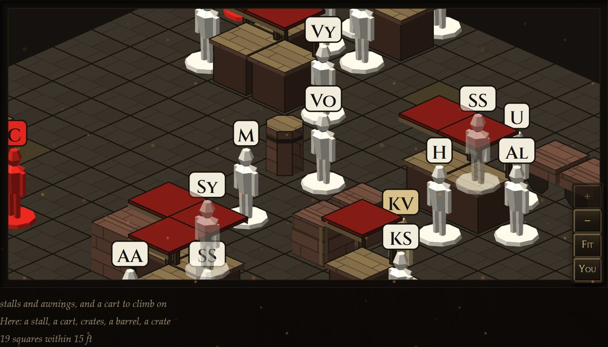
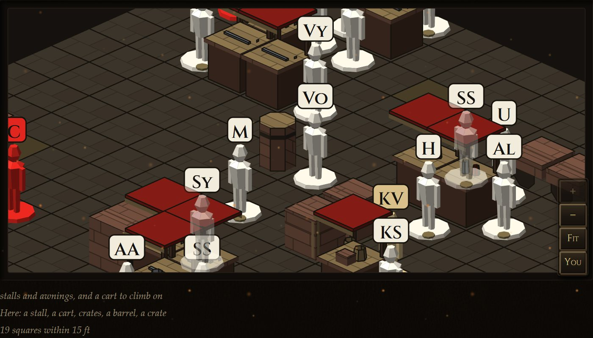
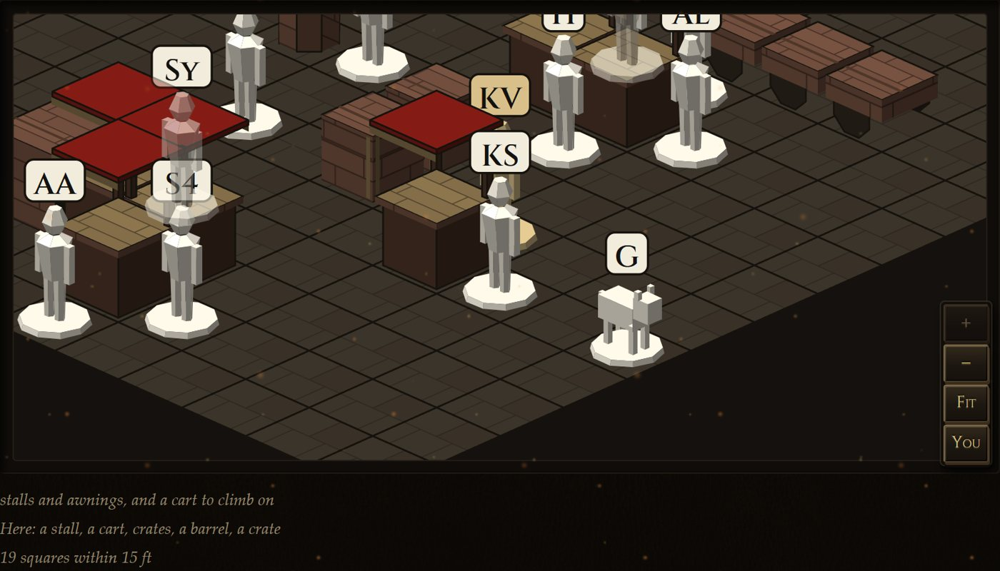
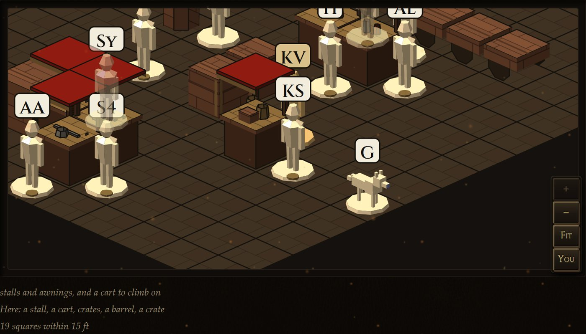
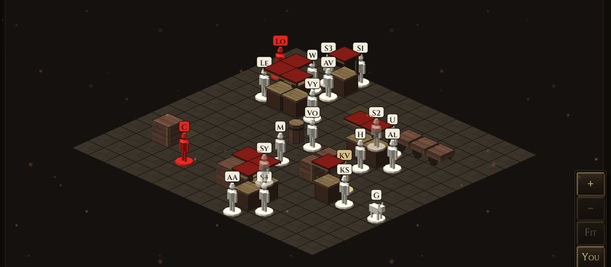
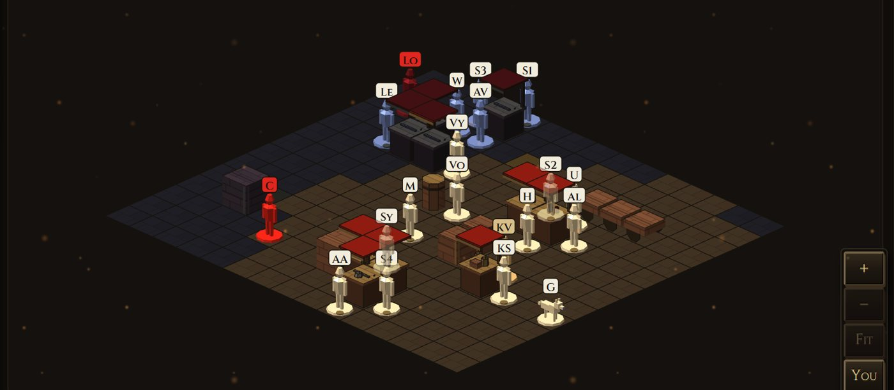
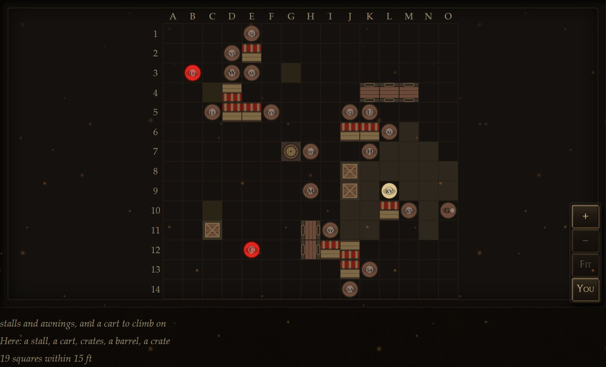
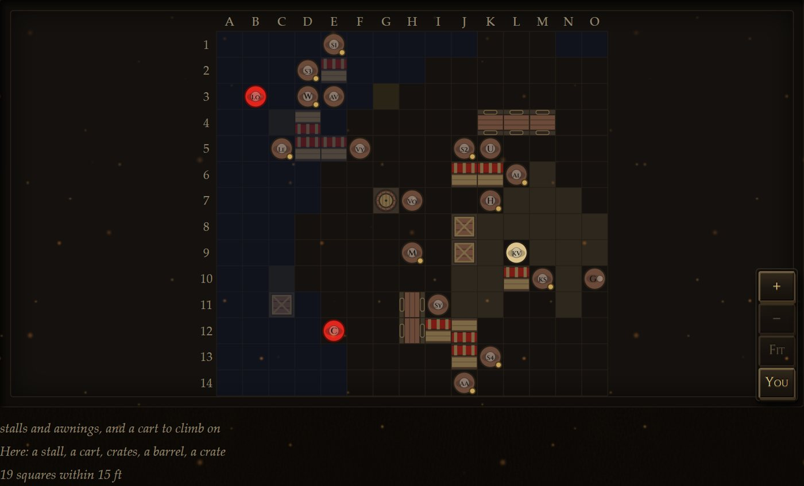

<title>Market Board Look</title>
<meta name="claude:viewport-fit-sides" content="cover">
<link rel="stylesheet" href="https://fonts.googleapis.com/css2?family=Cinzel:wght@500;700&family=EB+Garamond:ital,wght@0,400;0,500;1,400&display=swap">
<style>
  /* Layout: one column of pairs, current left and proposed right, stacking on a phone. */
  :root {
    --bg: #15110d; --panel: #1f1914; --line: #3a2f24; --fg: #ece3d0; --dim: #a8977c;
    --brass: #c9a45a; --pick: #6fc276;
    --display: "Cinzel", Georgia, serif; --body: "EB Garamond", Georgia, serif;
    color-scheme: dark;
  }
  body { background: var(--bg); color: var(--fg); font: 18px/1.5 var(--body); }
  main { max-width: 1240px; margin: 0 auto; padding-block: 32px 64px;
         padding-left: max(16px, env(safe-area-inset-left, 0px));
         padding-right: max(16px, env(safe-area-inset-right, 0px));
         display: grid; gap: 40px; }
  h1, h2 { font-family: var(--display); font-weight: 700; letter-spacing: .04em; text-wrap: balance; margin: 0; }
  h1 { font-size: 30px; color: var(--brass); }
  h2 { font-size: 21px; }
  p { margin: 0; max-width: 68ch; }
  .lede { display: grid; gap: 12px; }
  .dim { color: var(--dim); }
  section { display: grid; gap: 14px; border-top: 1px solid var(--line); padding-top: 24px; }
  .pair { display: grid; grid-template-columns: 1fr 1fr; gap: 12px; }
  figure { margin: 0; display: grid; gap: 6px; min-width: 0; }
  figcaption { font-family: var(--display); font-size: 13px; letter-spacing: .12em; text-transform: uppercase; color: var(--dim); }
  figure.new figcaption { color: var(--brass); }
  img { width: 100%; height: auto; border: 1px solid var(--line); border-radius: 3px; display: block; }
  .call { background: var(--panel); border: 1px solid var(--line); border-radius: 3px; padding: 12px 16px; }
  .call b { color: var(--pick); font-weight: 500; }
  ul { margin: 0; padding-left: 20px; display: grid; gap: 4px; max-width: 72ch; }
  @media (max-width: 720px) { .pair { grid-template-columns: 1fr; } body { font-size: 17px; } }
</style>
<main>
  <div class="lede">
    <h1>The market board, current and proposed</h1>
    <p>Four looks from the map plan (items 4, 5, 8 and 10). Every picture is the running game, not a drawing: the same saved market served twice, once by the current board (left) and once by the proposed one (right). Nothing here is in the game until you pick it.</p>
    <p class="dim">Branch <code>mock/map-look</code>, built on <code>feat/map-fixtures</code>. Item 1 (reach outlines over the gallery) was already fixed as a bug in step 2, so it is not in this round.</p>
  </div>

  <section>
    <h2>4 · Traders marked apart from shoppers</h2>
    <p>A small brass coin on the base of anyone who keeps a counter: on the 3D figure's base and on the flat token's rim. The side colours stay as they are. It is a coin rather than a ring because a gold ring on the base already means whose turn it is.</p>
    <div class="pair">
      <figure><figcaption>Current</figcaption></figure>
      <figure class="new"><figcaption>Proposed</figcaption></figure>
    </div>
    <div class="call"><b>My pick: proposed.</b> The coin is visible close up and costs nothing at a distance. It is small; if you want it louder, the next step is a brass apron band on the figure itself.</div>
  </section>

  <section>
    <h2>5 · Goods on the stalls</h2>
    <p>A stall shows the lines its keeper sells: bolts of cloth, sacks, a cook-pot with embers, coils of rope, jars, blades, hides. They are read from the keeper standing at the stall, so a stall with nobody at it is bare, as a shut stall would be. Visible in the close-ups above: blades on the weaponsmith's stall, a box and a jar on the curio stall.</p>
    <div class="call"><b>My pick: proposed,</b> with a caveat: the awning hides much of a counter from the default camera angle. The goods are clearest after a quarter turn or zoomed in.</div>
  </section>

  <section>
    <h2>8 · The wolf's shape</h2>
    <p>A lower, longer body, a deeper chest, the head carried forward and above the back, a snout, ears, and a tail hung low. It is the same shape for every beast, as before: two generic shapes in the game, never one per monster.</p>
    <div class="pair">
      <figure><figcaption>Current</figcaption></figure>
      <figure class="new"><figcaption>Proposed</figcaption></figure>
    </div>
    <div class="call"><b>My pick: proposed.</b> It reads as an animal walking rather than a table. (The proposed picture is taken at night with a torch, which is why it is warmer.)</div>
  </section>

  <section>
    <h2>10 · Night</h2>
    <p>The board is shaded by the light the player's character actually sees, which is the same light the rules use for miss chances. It is not shaded by the hour. Outdoors at night is the book's "dim": darker, and blue. A carried torch lights its own ring in a warm colour (here Kesst carries one: 20 ft lit, 40 ft brightened). A tavern at midnight stays lit, because the rules count a roofed room as lit by its own lamps. A character with low-light vision sees the night market as lit, so for them the board stays as it is by day. The letter plates are never darkened, so names stay readable.</p>
    <div class="pair">
      <figure><figcaption>Current, 10 at night</figcaption></figure>
      <figure class="new"><figcaption>Proposed, 10 at night</figcaption></figure>
    </div>
    <div class="pair">
      <figure><figcaption>Current, flat</figcaption></figure>
      <figure class="new"><figcaption>Proposed, flat</figcaption></figure>
    </div>
    <div class="call"><b>My pick: proposed.</b> The torch ring follows the rules' own distance count, so its edge is stepped rather than round. That is the truth of where the light falls, so I left it stepped.</div>
  </section>

  <section>
    <h2>Found while building this</h2>
    <ul>
      <li><b>Fixed</b> (commit c27d1833 on <code>feat/map-fixtures</code>): four stallholders in one market all showed "SS" on their plates. A clash left after the three letter rules now numbers them (S1 to S4). In the game's Cinzel face, "S1" can look like "SI".</li>
      <li><b>For you to decide:</b> out of a fight, an ordinary townsperson is a brown disc on the flat board and a white figure in 3D. The 3D code says the two boards share colours, so one of them is wrong. I have not changed either, because both looks are ones you have already seen.</li>
      <li>This market holds 13 keepers and 6 stalls, because I opened every counter for the picture. Shops (the armorer, the weaponsmith) then stand at stalls and lay their wares there. In play a keeper appears only when that counter is asked for.</li>
    </ul>
  </section>
</main>
